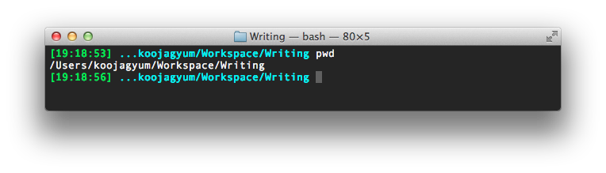

Prompt elipse in MacOS X
Table of Contents
1 PROMPT_DIRTRIM
bash shell에 PROMPT_DIRTRIM 이라는 변수는 터미널의 prompt에 나오는
현재 디렉토리 이름의 깊이(depth)를 제한해주는 역할을 하는 아주 유용한
변수이다. 그런데 이걸 Mac의 터미널에서 사용하려 했더니 동작을 하지
않았다.
2 Mac에서 동작하지 않는 이유
PROMPT_DIRTRIM 은 bash v.4 이상에서 동작하는데, Mac에서는 아래
버전이 설치되어 있다1. 본인 PC에서 확인해보니 3.2.51(1)
버전이었다.
3 해결 방법
PROMPT_DIRTRIM 을 bash로 직접 구현하는 방법이다. 참고
링크1에서는 depth가 2였는데, 3으로 바꾸어 보았다.
function more_than_three_depth {
pwd | awk -F / '{print $5}'
}
function depth_elipse {
local mttd=`more_than_three_depth`
if [ -z $mttd ]; then
echo
else
echo "..."
fi
}
function last_three_dirs {
pwd |rev| awk -F / '{print $1,$2,$3}' | rev | sed s_\ _/_g
}
function elipse_long_dirs {
local elipse=`depth_elipse`
local last3dirs=`last_three_dirs`
echo ${elipse}${last3dirs}
}
elipse_long_dirs
3.1 awk
awk 는 print 를 통해 n번째 인자들을 골라내는 데 사용했다. -F
옵션을 주면 구분자를 선택할 수 있다. more_than_three_depth 에서는
pwd 의 결과를 슬래시(/)로 나누어 디렉토리의 깊이를 계산하고
있다. last_three_dirs 는 pwd 를 반전시킨 다음에 뒤에서부터 3개의
디렉토리를 추출하고 있다.
3.2 rev
입력 파일에서 라인 단위로 반전시킨다. last_three_dirs 에서 마지막
3개의 디렉토리를 추출할 때 쓰인다.
3.3 sed
s옵션을 써서 입력 파일의 내용에 대해 치환을 수행할 수
있다. last_three_dirs 에서는 awk 의 결과로 나온 스페이스 공백으로
구분된 내용에서 스페이스 문자를 슬래시(/)문자로 치환시키는 역할을
한다. 인터넷에서 설명을 보면 's/정규표현식/교체어/플래그' 이런
식으로 사용하라고 되어 있는데, 본인 환경에서는 슬래시 대신에
언더바(_)로 쓰지 않으면 안 되었다. Mac에서의 예외 상황인 듯
하다(확실하진 않음).
3.4 .bash_profile에 적용
.bash_profile 이나 .profile 에 적용할 때에는 PS1 변수에다
디렉토리자리에 대신 넣으면 된다. 즉, 아래와 같이 한다.
export PS1='\[\033[01;32m\]$(date +%H:%M:%S) \[\033[01;36m\]$(elipse_long_dirs)\[\033[00m\] '
3.5 결과
